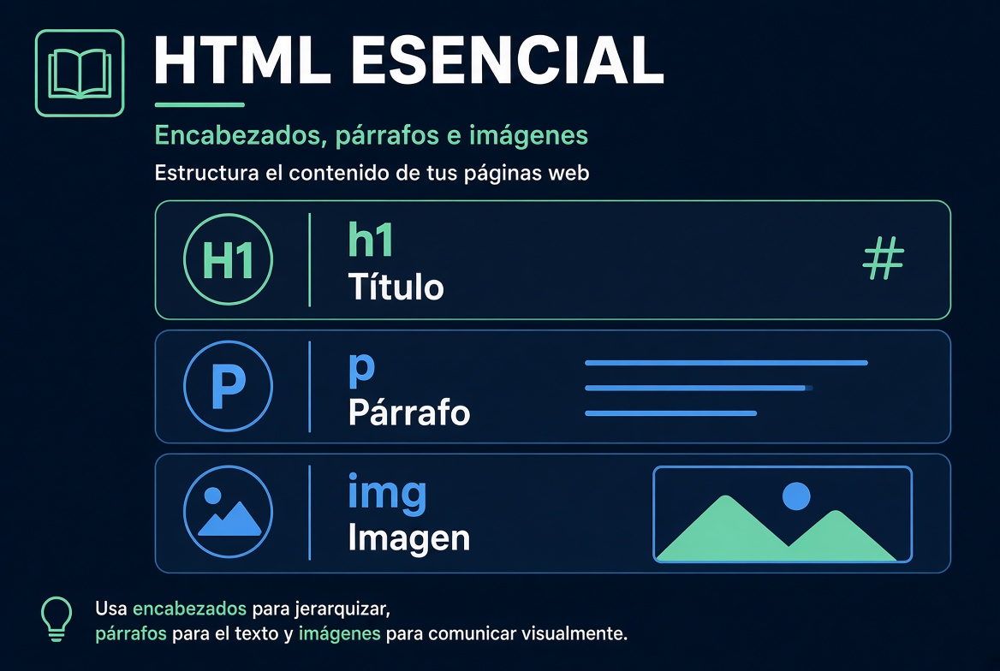

Lección 1 — Intro y primeras etiquetas

Hacé clic en el audio para mostrar el texto de esta lección.
Este curso masivo te va a preparar para ser desarrollador full stack. Lo dictan varios instructores y lo armó Scrimba. Acá está Per Harald Borgen, el CEO de Scrimba, presentando el curso.
Hola y bienvenida o bienvenido a este recorrido enorme para convertirte en desarrollador full stack. Estos módulos que estás por ver ya ayudaron a innumerables estudiantes en scrimba.com a entrar a la industria tecnológica como developers. Y no de esa forma teórica y aburrida. No. De una forma entretenida, en la que construís juegos, clonás Google e Instagram, armás apps de inversión con inteligencia artificial e incluso extensiones de Chrome. Y cuando digo “vos”, hablo en serio. Porque la única forma de aprender esto es escribir el código con tus propias manos.
A lo largo del curso, los profesores te van a tirar desafíos. De hecho, más de quinientas veces. El código inicial de esos desafíos está en GitHub o en scrimba.com, en la versión interactiva y ampliada de este curso.
Vamos a empezar con lo básico: HTML, CSS, JavaScript y lo que sigue. Después vamos a pasar a los frameworks y tecnologías que se usan en la industria: React, Node, Next, SQL, TypeScript, testing e incluso ingeniería con inteligencia artificial. Así que esto realmente es tu lugar de partida para convertirte en un desarrollador full stack profesional.
Me encantaría seguirte en este camino. Así que conectate conmigo en LinkedIn para poder alentarte desde la tribuna.
El filósofo francés René Descartes dijo tres palabras célebres: cogito, ergo sum, que en español se traduce como “pienso, luego existo”. Entonces, vamos a demostrarnos que existimos… programándolo en HTML.
La forma de hacerlo no es tan distinta de escribir en un editor de texto común. Ahí simplemente escribirías la oración. Y si quisieras que se viera más prominente, la seleccionarías y elegirías otro tipo de contenido: título uno, título dos, título tres. Si elegís título uno, el texto se vuelve mucho más destacado. Se convierte en un heading one.
En HTML hacemos lo mismo creando un archivo HTML. Acá se llama index.html, un nombre muy habitual para la página principal. En ese archivo escribimos etiquetas. Las etiquetas son como instrucciones para el navegador.
Para un título principal usamos la etiqueta h1. Se abre, va el texto, y se cierra. Eso le dice al navegador: “esto es el encabezado más importante de la página”.
Si querés un subtítulo, usás h2. Si querés un párrafo, usás la etiqueta p. HTML se trata de anidar elementos: un título, después un párrafo, después una imagen, y así se arma la estructura de la página.
Ahora vamos a hablar de imágenes, porque un artículo, por ejemplo sobre Marte, necesita una foto. Para eso usamos la etiqueta img. Lo particular de esta etiqueta es que no necesita cierre. Por eso se la llama etiqueta de autocierre.
Si recargás la página y no aparece nada, es porque todavía no le dijimos qué imagen mostrar. Eso se hace con el atributo src, que significa source, o fuente. Si el archivo se llama mars.jpg y está en la misma carpeta que index.html, alcanza con poner esa ruta.
Vas a notar que la imagen no se comporta igual que un párrafo. El párrafo ocupa todo el ancho; la imagen ocupa solo el ancho que necesita. HTML sirve para la estructura; CSS, para el estilo.
Resumen: HTML organiza el contenido con etiquetas. h1 y h2 son títulos. p es un párrafo. img muestra una imagen y usa src para indicar de dónde sale el archivo.